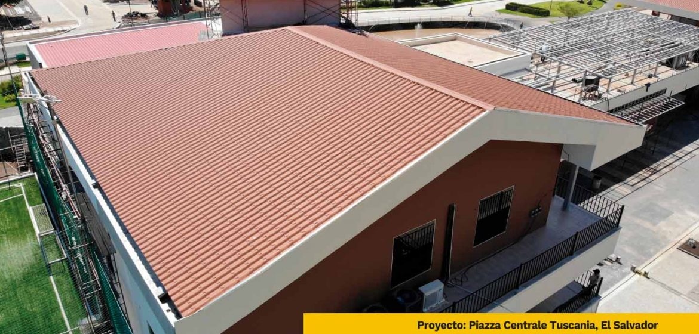

CONSTRUPANEL TEJA, es un sistema de cubierta termo-acústica con lleno de poliuretano de alta densidad 40kg/m3 (estructura interna de celdas cerradas ASTM-D2856) y protección en ambas caras realizadas en lámina de acero y aluminio con recubrimiento de zinc pre pintada al horno a base de poliéster. El proceso de fabricación es realizado por medio de una máquina de sistema robotizado y proceso continuo.
De esta manera construpanel teja proporciona confort térmico y acústico
